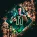
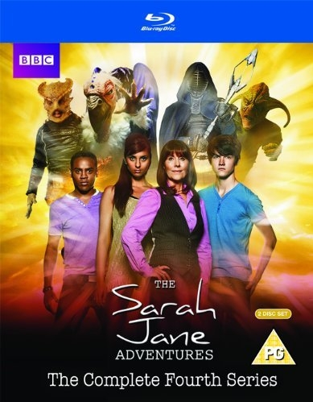
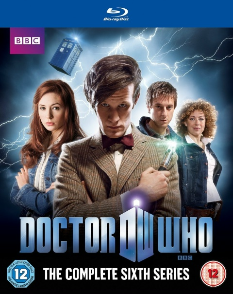
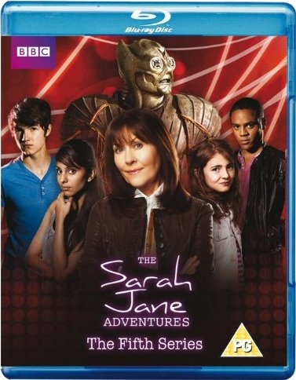
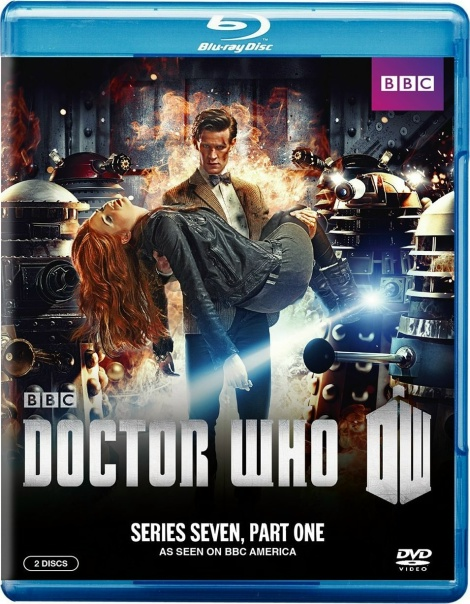

Таблица коллекции |  Навигация по канону |  Связные экранизации |


Новая эра (Ньюскул) с 2005 по 2022:


Перезапуск (Whoniverse) с 2023:


----


Эра Одиннадцатого Доктора
Актёр: Мэтт Смит
Первое появление в:
- (2010) Спецвыпуск: Конец времени (небольшое появление)
Доктор Кто -🔻5 сезон (2010)🔻

Мэтт Смит: юный лицом, старый душой. Эми Понд, трещины во времени и сказочный сумеречный тон перезапускают сериал.
— приквел к серии: Тем временем в ТАРДИС (эпизод 1)
2. Зверь внизу (The Beast Below)
3. Победа далеков (Victory of the Daleks)
╔4. Время ангелов (The Time of Angels)
╚5. Плоть и камень (Flesh & Stone)
— приквел к серии: Тем временем в ТАРДИС (эпизод 2)
6. Вампиры Венеции (The Vampires of Venice)
7. Выбор Эми (Amys Choice)
╔8. Голодная Земля (The Hungry Earth)
╚9. Холодная кровь (Cold Blood)
10. Винсент и Доктор (Vincent and the Doctor)
11. Квартирант (The Lodger)
╔12. Пандорика открывается (The Pandorica Opens)
╚13. Большой взрыв (The Big Bang)
Наш плейлист сезона в ВК
👩🦰 Приключения Сары Джейн - 4 сезон (2010) Спин-офф


Сезон экспериментирует с форматом, включая историю, где сама Сара Джейн исчезает. Дети берут инициативу в свои руки.
|💽 Мини-эпизоды: Пространство и Время (2011)
Доктор Кто -🔻6 сезон (2011)🔻


Тишина как враг и загадка Ривер Сонг выходят на первый план. Сезон смело ломает структуру: разделение надвое, обманка со смертью Доктора в премьере и постепенное раскрытие загадки в финале.
╔1. Невозможный астронавт (The Impossible Astronaut)
╚2. День Луны (Day of the Moon)
. Приквел 3 👈
3. Проклятие чёрной метки (The Curse of the Black Spot)
4. Жена Доктора (The Doctors Wife)
╔5. Мятежная плоть (The Rebel Flesh)
╚6. Почти люди (The Almost People)
. Приквел 7 👈
7. Хороший человек идёт на войну (A Good Man Goes to War)
. Приквел 8 👈
8. Давай убьём Гитлера (Lets Kill Hitler)
9. Ночные кошмары (Night Terrors)
10. Девочка, которая ждала (The Girl Who Waited)
11. Комплекс Бога (The God Complex)
12. Время на исходе (Closing Time)
. Приквел 13 👈
13. Свадьба Ривер Сонг (The Wedding of River Song)
➕|💽 Мини-эпизод: Смерть — единственный ответ (2011)
👽Торчвуд - 4 сезон (2011) День Чуда Спин-офф (➕Паутина лжи)

Действие переносится в США, формат расширен до десяти серий. Концепция «никто не умирает» разворачивается в тревожный социальный триллер.
➕|🎨Анимация: Паутина лжи
👩🦰 Приключения Сары Джейн - 5 сезон (2011) Спин-офф


Финальный сезон, незавершённый из-за смерти Элизабет Слейден. Три истории — тёплое прощание с героиней и сериалом.
|💽 Мини-эпизоды: Ночь и Доктор (2011)
| 🎬Доктор, вдова и платяной шкаф (спецвыпуск) (2011) ➕Приквел
|💽 Мини-эпизод: На вес золота (2012)
|💽 Мини-эпизоды: Жизнь Пондов (2012)
Доктор Кто -🔻7 сезон (2012)🔻 (1-я половина)


Понды уходят, каждый эпизод работает как самостоятельный фильм. Прощание с Эми и Рори — один из самых эмоциональных моментов сериала.
1. Изолятор далеков (Asylum of the Daleks)
2. Динозавры на космическом корабле (Dinosaurs on a Spaceship)
. Приквел 3 👈
3. Город под названием Милосердие (A Town Called Mercy)
4. Сила трёх (The Power of Three)
5. Ангелы захватывают Манхэттен (The Angels Take Manhattan)
... остальные серии после спецэпизодов
|💽 Мини-эпизод-анимация: Постскриптум (2012)
|💽 Мини-эпизод: Великий детектив (2012)
| 🎬Снеговики (спецвыпуск) (2012) ➕Приквел
|💽 Мини-эпизод: Битва при Демоновом Беге: Два дня спустя (2013)
Доктор Кто -🔻7 сезон (2013)🔻 (2-я половина)

Загадка Клары Освальд движет сюжетом, финал на Трензалоре раскрывает судьбу Доктора. Тон эпичнее, подводится итог всей эры.
.Приквел 6 👈
6. Колокола Святого Иоанна (The Bells of Saint John)
7. Кольца Акатена (The Rings of Akhaten)
8. Холодная война (Cold War)
9. Прячься (Hide)
10. Путешествие к центру ТАРДИС (Journey to the Centre of the TARDIS)
11. Багровый ужас (The Crimson Horror)
12. Кошмар в серебряных тонах (Nightmare in Silver)
. 2 приквела к 13 серии 👈
13. Имя Доктора (The Name of the Doctor)
|💽 Мини-эпизод: Боги дождя (2013)
|💽 Мини-эпизод: Ночь Доктора (2013)
| 🎬День Доктора (спецвыпуск) (2013) ➕Приквел
| 🎬Время Доктора (спецвыпуск) (2013)
Также появляется в:
- (2014) 8 сезон, 1 серия: Глубокий вдох (небольшое появление)